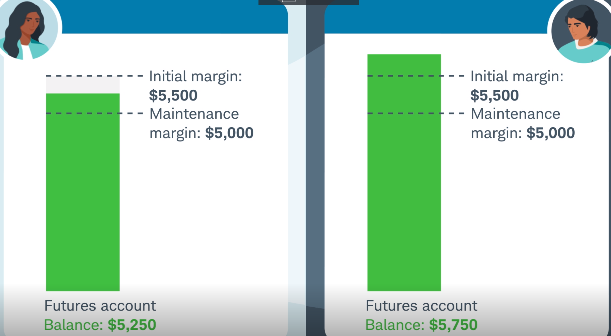

一个小白眼中的期货交易是怎么回事
期货交易的出发点非常简单。对于某一种商品，比如黄金或石油，存在一个买方和一个卖方，他俩达成一个远期的合约，即以某个价格来购买一批商品。这个合约规定了商品的单价，包含一个确定的期限。如果合约到期，则卖方交付商品，买方支付现金，完成交易之后合约也就被履行了。
为什么双方要签订这样的合约，而不是等到时候直接进行买卖呢？关键在于价格——买方希望锁定购买价格来避免因为价格上涨带来的风险，而卖方则同样希望锁定销售价格来避免因为价格下降带来的风险。当然，如果最终价格上涨超过约定的价格，则买方获益，反之则卖方获益。期货的存在为一些定期需要原材料从事生成的企业和供应原材料的企业双方提供了便利。
当然如果交易者都在私下完成，则无法形成一个有效公正的市场机制，所以随着交易者越来越多，形成了期货交易所，交易者能够在交易所寻找交易伙伴。交易所制定交易的规则，比如费用和商品的规格和质量等等。
期货交易跟股票交易非常不同。最容易让人误解的可能是认为期货交易是一种买卖合约的行为，比如“买入黄金合约”或“卖出黄金合约”。但事实上，期货合约本身并不是买卖的对象，而合约对应的商品才是，合约只是对买卖双方的一种承诺。可一些交易的术语，比如买入合约和卖出合约，却让人误以为交易双方是在对合约进行买卖，好像交易双方中一方是买入了一些合约，另一方是卖出合约。如果真的是这样，那这些合约是从何而来？又跟前面讨论过的期货合约的概念是什么关系？
事实上，期货交易的过程中，一份期货合约只会产生和消失，并不会从一个交易者转移到另一个交易者，这似乎让人难以理解，但是回归期货合约的原始定义后，这就合理了。讨论一种极其简化的场景——假设交易者A认为某种商品的期货价格会上涨，于是他决定在交易所签订一份期货合约（如果价格果真上涨，则A获得收益），此时必须存在一个交易对手B，B认为价格下跌，也愿意签订一份期货合约（如果价格果真下跌，则B获得收益）。交易者A和B签订的合约，在合约到期时，会各自交付和收取合约中约定的商品数量。假设一段时间之后，存在另一个交易者C，他进入期货市场，他也看多这种商品，于是希望签订一份期货合约，而交易者A此时已经获得部分收益打算离场，那么A可以把合约转移给C吗？表面上是可行的，因为转移之后A就算平仓，而C作为B的交易对手存在市场之中，而市场中的多空双方是匹配的。但实际上并不是这样操作的，如果A打算平仓，则A需要跟C签订一份新的期货合约，只不过在这个合约中C处于多方，而A处于空方，这样A的多空合约相抵消，A就平仓了，这样做实际达到了“转移”的结果，但过程确实是不一样的。
期货市场中大家真正交易的是商品期货，而操作的方式则是签订期货合约，那么签订合约时就需要一定的保证金来确保交易双方是“有诚意的”。也就是说，如果交易双方决定签订一份合约，那么他们都必须往交易所的各自的账户里存一笔钱来保证自己将来会履行合约。假设一张黄金的合约对应的黄金价格是100万，合约的保证金通常需要一个较小的比例，比如5%（则对应5万）。如果对应的商品价格发生变化，则保证金账户的资金也随之变化。如果是买入合约，那么商品价格上涨则保证金账户资金增加；反之则保证金账户资金下跌。只不过这种上涨和下跌都是未实现的，这就好像是持仓股票的时候，如果股价上涨则账户出现浮盈，反之则出现浮亏。保证金账户的浮盈和浮亏需要完全反映对应的商品价格涨跌带来的收入或亏损，也就是说如果前面例子里的黄金价格从100万涨到105万，则保证金账户里的资金就变成了5+5=10万！反之，如果黄金价格从100万跌到95万，则保证金账户的资金就变成了5-5=0！而期货市场上只需要小比例资金（即保证金）就能撬动数倍的商品，所以期货交易天然是高杠杆的。

根据保证金的性质，交易所当然不能允许保证金低于某个限度，否则就达不到“保证”的作用了。因此存在一个比例，当保证金账户中的资金低于一个比例之后，则会触发追加保证金的要求（即margin call），即交易所要求交易者追加保证金来保持其持有合约的权利。如果交易者无法完成追加，则其账户会被强制平仓。这也是高杠杆交易的一个特点。
早期的期货交易来源于远期实物交割的需求，而到现在绝大部分的期货交易目的并不是实物交割，即交易者并不期望等到合约到期最后进行买货（多方）或交货（空方）。大部分的期货交易都是投机的性质，即使确实需要对冲价格风险（最早的需求）也不必真的交易商品。为此，一方面部分商品期货交易支持现金结算，即在合约到期之后只需要双方多退少补。即使对实物交割合约，多空双方也可以各自平仓退出交易，对应的合约也就被终止而不需要执行实物交割。对应的收益/损失则完全来自其保证金账户的变化。只要不是手持实物交割合约到合约过期时间，都可以避免真正去完成实物交割。对于一些虚拟商品，比如股指期货，就根本不会存在所谓的实物交割。
从这一点来看，期货交易的规模其实远大于商品交易的规模，那么期货的价格是否真的能指导现货的价格就存在一个疑问了。因为期货价格的产生，更多是期货交易者通过交易行为共同决定的产物，又由于大量的期货交易都只是投机行为，期货价格虽然能影响实物交易价格，但其实还是间接的（部分真正完成实物交割的合约可能影响更大？但毕竟是极少数的）。随着金融衍生品市场的规模越来越大，地缘政治风险上升导致的市场碎片化，这个定价和指导的意义似乎正在逐步淡化。
一个正常的期货交易市场，其深度和流动性是有保证的，但仍然需要注意合约过期前最后一段时间的波动性，毕竟大部分交易者在这时候已经平仓离场了（为了避免进行实物交割）。在2020年由于WTI原油期货交易中出现的价格为负的问题，导致原油宝巨亏的问题按理说是不应该出现的。一方面对于原油宝，理论上应该提前一段时间做合约转换roll-over，即从5月的期货转换到6月，但是原油宝选择在合约到期前4个小时才进行转换。另一方面，正常情况下空头与多头在合约到期之前面临的情况是类似的，大家都不希望进行实物交割，毕竟空方是需要拿出真正的商品（这里就是原油）来做交割。所以即使在最后的时间，双方也应该能达成一个大致合理的共识来完成平仓操作。但这时候的空方看透了多方不得不平仓的弱点（因为到最后一个交易日仍然发生了暴跌，那么从空方的角度，如果不是空方自己的操作，则说明有多方在踩踏找空方平仓），而且当时的原油库存已经接近满载，意味着希望卖石油的人远比买石油的人多。所以在最后的“勇敢者游戏”里，空方更有理由坚持不平仓来极限压低期货价格（多方必须开空单寻求匹配的交易对手来平自己的多仓，此时市场上空单数量远超过多单而找不到匹配，就好比都想卖东西却找不到买家，但他们必须今天卖完，自然得降价，血本无归），进而导致期货价格暴跌，多方最终被绞杀。
在这个实例中，实际上原油现货的价格并没有受到期货的影响，再次说明了衍生品交易对现实的指导意义存在疑问，在某些时候成为了资金对赌的赌场。 另外，也告诫了那些完全忽视基本行情的投资者，不应该在这种加了杠杆的投资品上去赌未来行情发生反转。这跟股票一个区别是期货是有期限的，而不像股票的现货交易中，交易者只要不加杠杆，如果看好未来的行情，可以长期持有，等到行情到来。而期货根本不会给交易者这样的等待时间。
期货与现货的区别
期货和现货的交易逻辑是非常相似的，无非低买高卖。对于现货交易，比如股票，买方在交易市场上买入股票（对应另一个交易者卖出股票）后持有一段时间，在股价上涨后卖掉股票赚取差价（这里暂不考虑分红）；同样，如果交易者看空一支股票，也可以借来股票后卖掉，等股价下跌再买入股票平仓。虽然期货交易中大多数时候并不会发生真正的商品交易，而只是保证金账户的变化，但买卖逻辑是几乎与现货完全一样的，都是基于对底层交易品未来的价格走势做出交易判断的。操作上的一个区别是期货有一个到期时间，而现货则理论上可以无限期持有。另外，由于期货天然是有杠杆的，所以底层交易品的微小波动就可能造成保证金账户的急剧变化。对于一些交易者来说，这也是一种以小搏大的机会。
关于无风险套利
如果现货的价格与期货价格有差别，那么就存在一个无风险套利的机会。如果期货比现货要贵，那么在现货市场上买入现货，同时在期货市场签订卖出期货合约就能立刻获得价差。这可以理解为你手中已经以较低的成本获得了该商品库存（现货），而你也拿到了以较高价格销售这批商品的合约（期货卖出合约），所以这笔交易是稳赚不赔的。反之，如果期货比现货便宜，也可以用类似的方式（卖出现货，买入期货）实现无风险套利。
逼空和逼多
前面在“原油宝”的案例里讲的情况实际上是逼多。无论逼空还是逼多，都是指交易者因为了解对手不敢参加实物交割所以迫使对手以自己有利的成交价平仓。在“原油宝”的例子里，空方在最后的交易日发现了多方不敢实物交割（因为如果多方敢于实物交割，不会出现踩踏式的价格下跌），所以迫使多方接受低到离谱（负数）的交易价，而多方赔的血本无归。
最近学习到还有一个非常著名的逼多案例，即是关于美元如何打压黄金价格的。出发点不用解释，信用货币一定视黄金为天敌。美国的黄金储备存放在纽约美联储银行地下金库，而至于究竟有多少，没有人知道。 该银行允许用户以一个较低的租金“租赁”黄金，所以交易者可以先租赁一批黄金，而后在黄金期货市场上做空黄金。 如果对手多方不敢在交易日时进行实物交割，则做空方就会通过逼多来迫使对手接受较低的交易价格，因为大多数多方都不具备足够的资金。 即使多方愿意进行实物交割，政府也规定了所有实物黄金必须存储在银行，所以你就算买到黄金也拿不走，而纽约联储银行不仅对你“保存”在银行的黄金收管理费，还可以借出去赚租金。 借着这个手段，美联储成功打击了国际金价。 至于地下金库里究竟有多少黄金，只有“天”知道。
主要参考文献
[1] How To Trade Futures Contracts
[2] Understanding Futures Margin
[3] 如何看待原油期货结算价持续刷新新低，历史上首次收于负值？
[4] 黄金上摸2000后的货币逻辑